A low power wristband for studying temperature variation and pregnancy outcomes in rural Sindh.
Motivation
Longitudinal temperature sensing requires a wearable that can operate through field studies with little maintenance and limited charging access.
Work completed
- Designed the complete schematic and four layer PCB around an nRF52 series microcontroller.
- Prepared the board for JLCPCB manufacturing and hand assembled the surface mount components.
- Developed the hardware and firmware as an end to end in house platform.
Outputs
- Produced a wearable prototype targeted at four months of operation per charge.
- Created a reusable sensing platform for maternal health field research.
Photos and videos
Gallery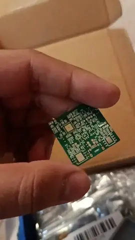
Maternal Health Wristband Maternal Health Wristband
Maternal Health Wristband

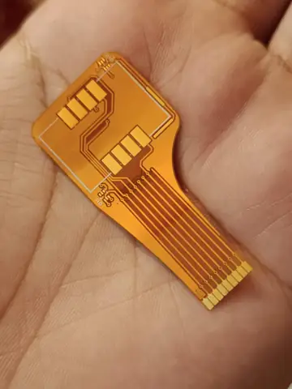
Maternal Health Wristband
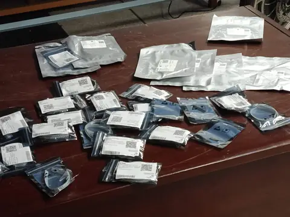
Maternal Health Wristband
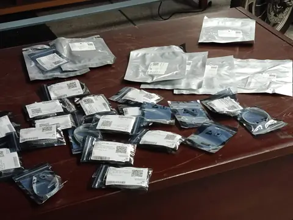
Maternal Health Wristband
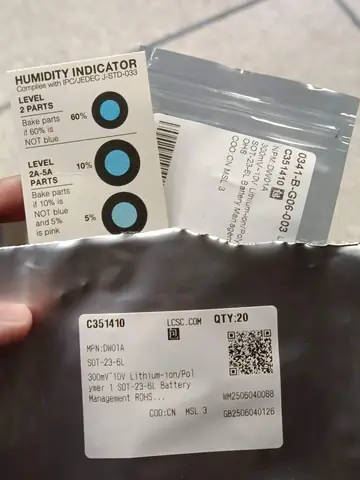
Maternal Health Wristband
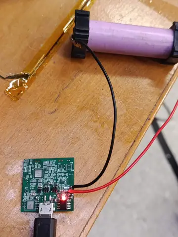
Maternal Health Wristband
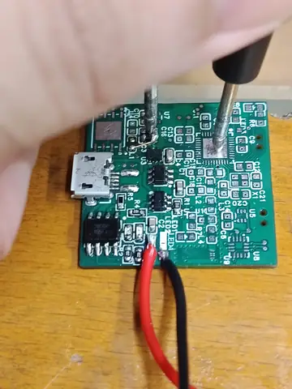
Maternal Health Wristband
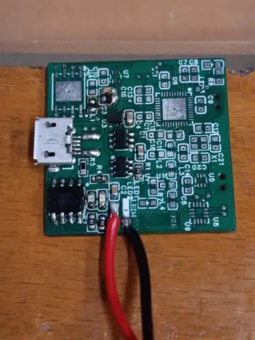
Maternal Health Wristband
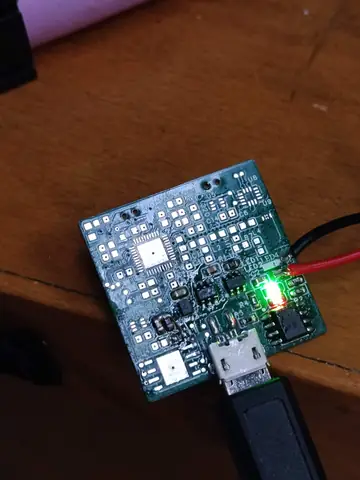
Maternal Health Wristband
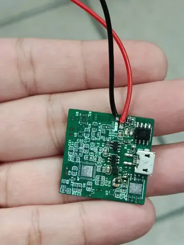
Maternal Health Wristband
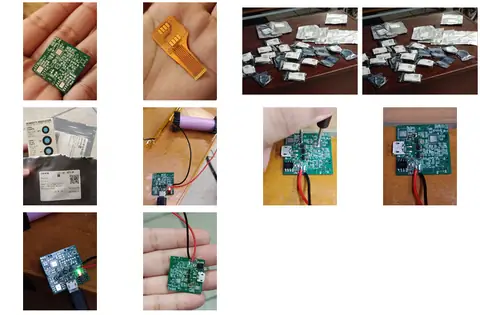
Maternal Health Wristband